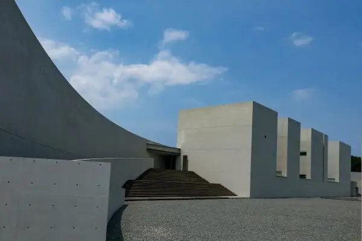
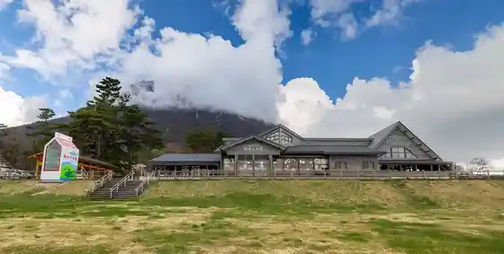
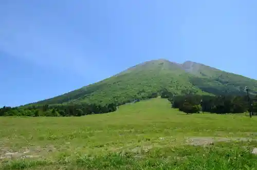
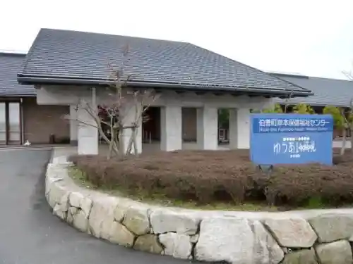
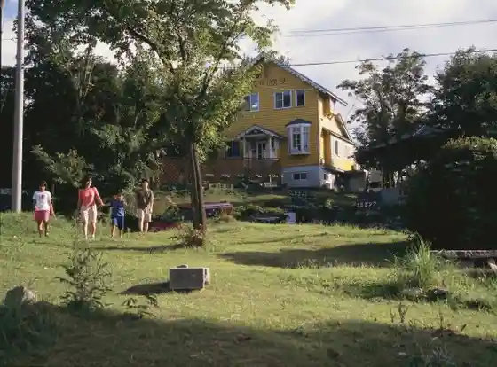

Hoki, Tottori
Hoki · Tottori
Hoki
Highlighted on the Tottori map.

Sights
Oyama Makibamiruku Village

Oyama Masumizu Highlands Masumizu Kogen Tenku Rifuto

Ueda Masaji Shashin Art Museum
Kishimoto Onsen (Yuai Paru)

Oyama Penshon Village Ai no Piapenshon Village

Miruku no Sato Tokusei Sofutokuriimu
Hoki Kuni Sangaku Art Museum
Hoki Town Hall